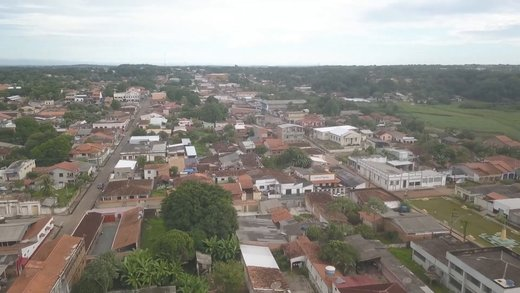

00:00:03.971
Vista aérea da malha urbana, com ruas retas e telhados de cerâmica entre áreas verdes.
Alenquer (PA) · confirmado
A abertura apresenta Alenquer e lembra o povoado que antecedeu a cidade atual.
Transcrição · 00:00:00 | 00:00:08
Turismo Aqui — quadro de vídeo publicado no YouTube